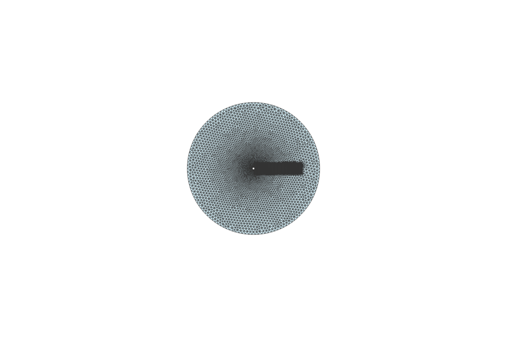
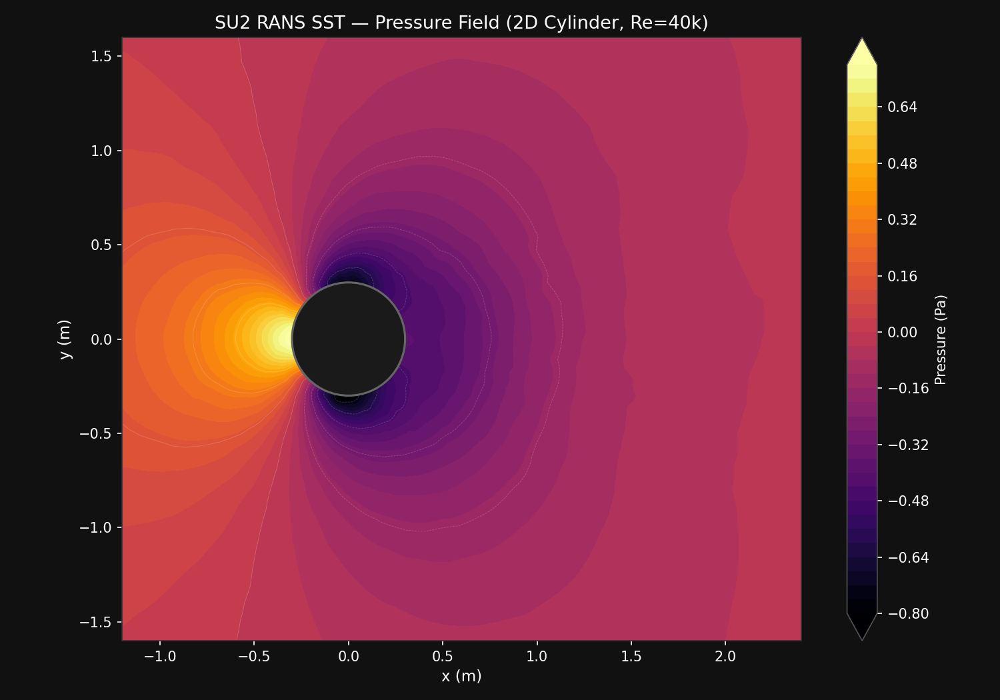
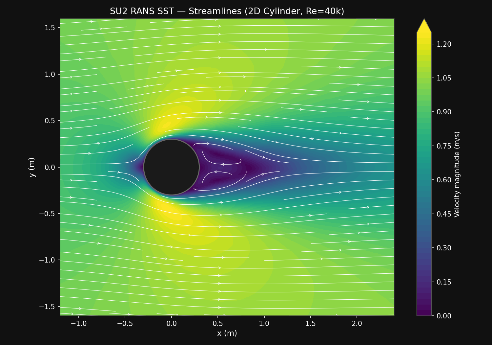
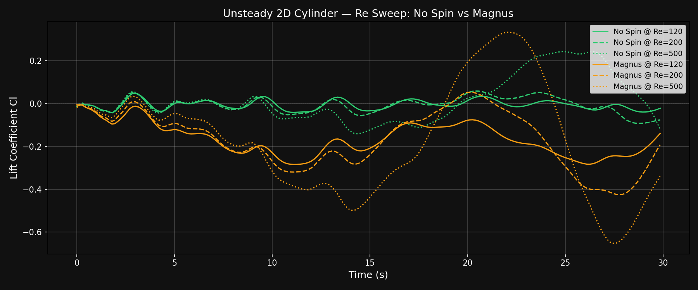
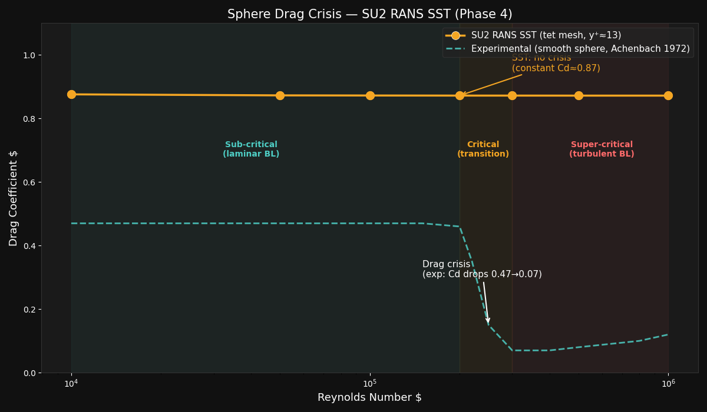
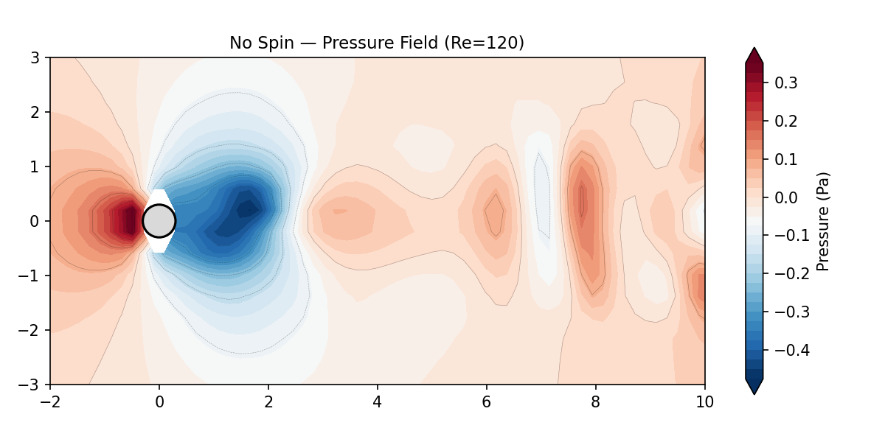
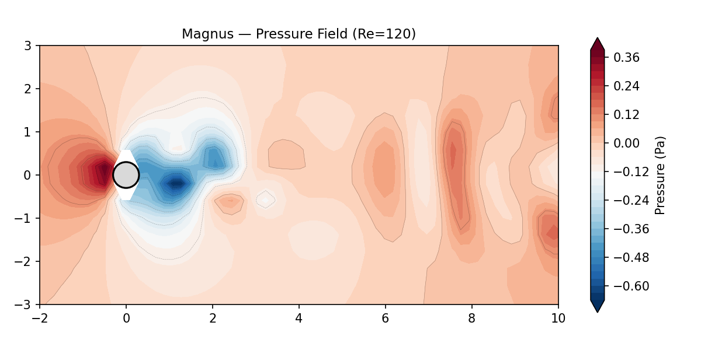
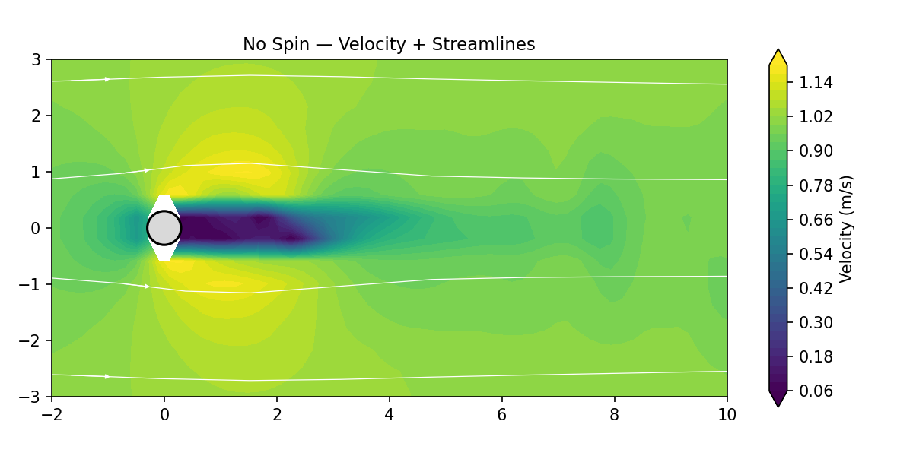
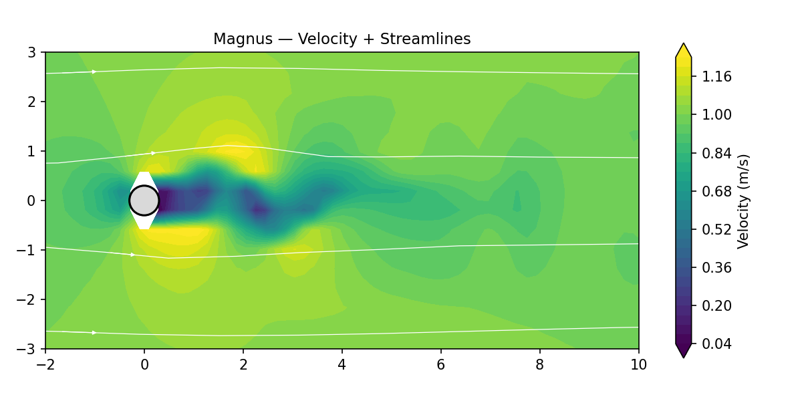
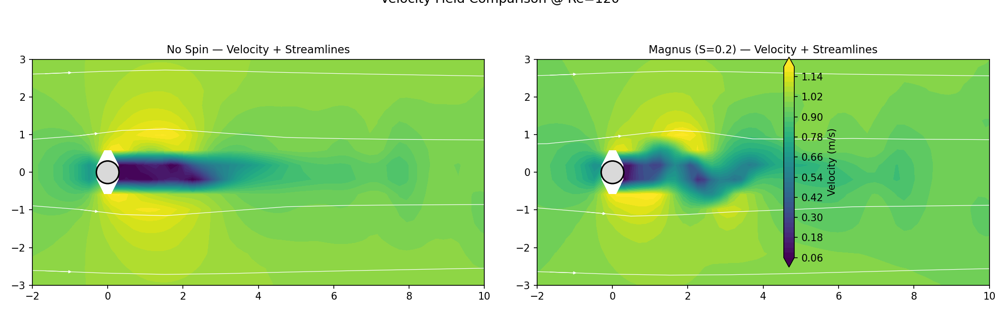

# What is CFD?
Computational Fluid Dynamics (CFD) is the numerical solution of the Navier-Stokes equations — the partial differential equations that govern the motion of fluid. Instead of building a physical prototype and measuring forces in a wind tunnel, CFD divides the domain into thousands or millions of discrete cells (a mesh), then solves for velocity and pressure at each cell center using iterative matrix algebra.
For a soccer ball in flight, CFD tells us:
- Drag coefficient $C_d$ — how much the ball slows down
- Lift coefficient $C_l$ — how much it curves (Magnus effect)
- Separation point — where the boundary layer detaches, determining wake size and pressure drag
- Strouhal number $St$ — the frequency of vortex shedding (knuckleball jitter)
Steady vs Unsteady: A steady simulation assumes the flow does not change in time — one solution captures the time-averaged behaviour. An unsteady simulation marches forward in small time steps, resolving transient phenomena like vortex shedding. The knuckleball is inherently unsteady; a spinning Magnus shot can be approximated as steady because the wake locks into a fixed asymmetric pattern.
Laminar vs Turbulent: At soccer-relevant Reynolds numbers ($Re \approx 2 \times 10^4$ to $5 \times 10^5$), the flow can be either laminar (smooth, ordered) or turbulent (chaotic, mixing). A RANS (Reynolds-Averaged Navier-Stokes) model like SST $k$-$\omega$ solves for the mean flow and models the turbulent fluctuations. A laminar simulation solves the raw Navier-Stokes without a turbulence model — accurate at low Re, but unable to capture turbulence at high Re without extreme grid resolution (DNS).
This project uses two solvers at different fidelity levels to bracket the real physics, exactly as industrial aerospace teams operate.
# Our Two-Solver Pipeline
No single CFD tool is optimal for every stage of the workflow. We use a tiered approach:
| Layer | Tool | Cost | Fidelity | Purpose |
|---|---|---|---|---|
| Rapid prototyping | ΦFlow (2D) | Seconds per run | Laminar, no turbulence model | 100+ parametric sweeps, identify interesting regimes |
| High-fidelity validation | SU2 (2D / 3D) | Minutes to hours | RANS SST $k$-$\omega$, unstructured mesh | Accurate $C_d$, $C_l$, boundary layer profiles |
| Visualization | PyVista | — | — | 3D pressure contours, stream ribbons, comparison renders |
# ΦFlow — Rapid Prototyping Layer
ΦFlow is an open-source CFD framework developed at TU Munich, built on JAX for GPU-accelerated, differentiable simulation. It trades physical accuracy for speed, making it ideal for exploration.
What It Solves
Incompressible Navier-Stokes on a staggered MAC grid (velocity stored on cell faces, pressure at cell centers). The solution algorithm per timestep:
- Semi-Lagrangian advection — trace each particle path backward through the velocity field to update momentum
- CG pressure solve — conjugate gradient iteration to enforce $\nabla \cdot \mathbf{u} = 0$
- Obstacle update — enforce no-slip condition on cylinder surface (including rotation for Magnus)
Simulation Conditions
| Parameter | Value | Notes |
|---|---|---|
| Reynolds number | $Re \approx 4 \times 10^4$ | Based on $U = 1.0$ m/s, $D = 0.6$ m, $\nu = 1.5 \times 10^{-5}$ m²/s |
| Boundary conditions | Uniform inlet (left), free-slip top/bottom, outflow (right), no-slip cylinder | Cylinder surface: rotating wall for Magnus ($\omega = 10$ rad/s), stationary for knuckleball |
| Spin parameter | $S = \omega R / U = 3.0$ | Exaggerated vs real soccer ($S \approx 0.2$) for visual clarity of the Magnus effect |
| Turbulence model | None (laminar) | Flow remains laminar at this Re on a 2D grid; no RANS model |
| Simulation time | ~30 s (2000 steps, $\Delta t \approx 0.015$ s) | Several vortex shedding cycles captured |
Limitations
Implementation
from phi.jax.flow import Obstacle, StaggeredGrid, fluid, advect, vec
v0 = StaggeredGrid((1.0, 0.0), BOUNDARY, x=256, y=128, bounds=BOX)
obstacle = Obstacle(CYLINDER, angular_velocity=10.0)
for i in range(N_STEPS):
v = advect.semi_lagrangian(v, v, dt=DT)
v, p = fluid.make_incompressible(v, obstacle)
# SU2 — High-Fidelity Validation Layer
SU2 is an open-source finite-volume RANS solver developed at Stanford University. Version 8.4 “Harrier” is used here, running on Rosetta 2 x86_64 emulation on Apple Silicon. SU2 is the validation deck — it provides production-grade aerodynamic coefficients that we trust more than ΦFlow’s laminar approximation.
Numerical Method
SU2 uses a finite-volume discretization on unstructured meshes (triangles in 2D, tetrahedra in 3D). The flow variables are stored at cell centers; fluxes are computed at cell faces using an approximate Riemann solver. For incompressible flows, an artificial compressibility method couples pressure and velocity.
- Convective scheme: FDS (Roe-type flux difference splitting) for stability at all speeds
- Time integration: Euler implicit (steady), dual time-stepping 2nd-order (unsteady)
- Linear solver: FGMRES with ILU preconditioner
Turbulence Modeling — RANS SST $k$-$\omega$
Reynolds-Averaged Navier-Stokes decomposes the flow into mean ($\bar{\mathbf{u}}$) and fluctuating ($\mathbf{u}'$) components. The Reynolds stresses $\overline{u'_i u'_j}$ are modelled by the SST $k$-$\omega$ (Shear Stress Transport) model, which blends:
- $k$-$\omega$ near walls — accurate boundary layer integration
- $k$-$\varepsilon$ in the free stream — avoids freestream sensitivity of pure $k$-$\omega$
Mesh Generation (gmsh)
All meshes are generated programmatically using gmsh’s Python API. The 2D cylinder mesh uses distance-based refinement near the cylinder surface and a Box field to concentrate cells in the wake region — where vortices form and need the highest resolution.


def cylinder_2d(radius=0.3, farfield_radius=15.0,
cl_cyl=0.01, cl_far=0.5,
cl_wake=0.04, wake_length=4.0, wake_width=1.0):
gmsh.initialize()
gmsh.model.add("cylinder_2d")
disk = gmsh.model.occ.addDisk(0, 0, 0, radius, radius)
farfield = gmsh.model.occ.addDisk(0, 0, 0, farfield_radius, farfield_radius)
ov, _ = gmsh.model.occ.cut([(2, farfield)], [(2, disk)])
gmsh.model.occ.synchronize()
# Distance-based refinement near cylinder
gmsh.model.mesh.field.add("Distance", 1)
gmsh.model.mesh.field.setNumbers(1, "NodesList", [surface_tag])
gmsh.model.mesh.field.add("Threshold", 2)
gmsh.model.mesh.field.setNumber(2, "InField", 1)
gmsh.model.mesh.field.setNumber(2, "SizeMin", cl_cyl)
gmsh.model.mesh.field.setNumber(2, "SizeMax", cl_far)
gmsh.model.mesh.field.setNumber(2, "DistMin", 0)
gmsh.model.mesh.field.setNumber(2, "DistMax", radius * 3)
# Box field for wake refinement downstream
gmsh.model.mesh.field.add("Box", 3)
gmsh.model.mesh.field.setNumber(3, "VIn", cl_wake)
gmsh.model.mesh.field.setNumber(3, "VOut", cl_far)
gmsh.model.mesh.field.setNumber(3, "XMin", -radius)
gmsh.model.mesh.field.setNumber(3, "XMax", wake_length)
gmsh.model.mesh.field.setNumber(3, "YMin", -wake_width)
gmsh.model.mesh.field.setNumber(3, "YMax", wake_width)
gmsh.model.mesh.field.add("Min", 4)
gmsh.model.mesh.field.setNumbers(4, "FieldsList", [2, 3])
gmsh.model.mesh.field.setAsBackgroundMesh(4)
cyl_tag = get_physical_tag(gmsh, "wall")
gmsh.model.addPhysicalGroup(1, [cyl_tag], name="wall")
gmsh.model.addPhysicalGroup(2, [ov[0][0][1]], name="farfield")
gmsh.model.mesh.generate(2)
gmsh.model.mesh.createTopology() # required for SU2 export
gmsh.write(f"{name}.su2")
Simulation Conditions
Steady RANS SST (2D Cylinder, Re=40k)
| Parameter | Value | Notes |
|---|---|---|
| Solver | INC_RANS |
Incompressible RANS (low Mach, ~0.003) |
| Turbulence model | SST $k$-$\omega$ | Fully turbulent; no transition model |
| Reynolds number | 40,000 | Non-dimensionalized via INITIAL_VALUES |
| Viscosity | $\mu = 2.5 \times 10^{-5}$ | Non-dimensional: $\mu = 1/Re$ |
| Convective scheme | FDS | Roe-type flux splitting; MUSCL=NO |
| Iterations | 3,000 | Converges at ~500; CFL=0.5 |
SOLVER= INC_RANS
KIND_TURB_MODEL= SST
INC_DENSITY_MODEL= CONSTANT
INC_ENERGY_EQUATION= NO
INC_NONDIM= INITIAL_VALUES
REYNOLDS_NUMBER= 40000
REYNOLDS_LENGTH= 0.6
VISCOSITY_MODEL= CONSTANT_VISCOSITY
MU_CONSTANT= 2.5e-05
MARKER_HEATFLUX= ( wall, 0.0 )
MARKER_MONITORING= ( wall )
MARKER_FAR= ( farfield )
CONV_NUM_METHOD_FLOW= FDS
MUSCL_FLOW= NO
TIME_DISCRE_FLOW= EULER_IMPLICIT
CFL_NUMBER= 0.5
ITER= 3000
LINEAR_SOLVER= FGMRES
LINEAR_SOLVER_PREC= ILU
Unsteady Laminar NS (2D Cylinder, Re=120)
| Parameter | Value | Notes |
|---|---|---|
| Solver | INC_NAVIER_STOKES |
No turbulence model — laminar NS |
| Reynolds number | 120 | Deliberately sub-critical for vortex shedding |
| Time marching | Dual time-stepping 2nd-order | 200 physical steps, 15 inner iters each |
| Time step | 0.15 s | Resolves shedding frequency $f \approx 0.53$ Hz |
| Nondimensionalization | DIMENSIONAL |
Dimensional $\mu$, $\rho$, $U$; more stable for unsteady |
| Spin (Magnus) | $\omega_z = 3.33$ rad/s | Moving wall BC; $S = \omega R / U = 0.2$ |
SOLVER= INC_NAVIER_STOKES
INC_DENSITY_MODEL= CONSTANT
INC_ENERGY_EQUATION= NO
INC_NONDIM= DIMENSIONAL
INC_DENSITY_INIT= 1.2886
INC_VELOCITY_INIT= (1.0, 0.0, 0.0)
VISCOSITY_MODEL= CONSTANT_VISCOSITY
MU_CONSTANT= 0.00267875
REYNOLDS_NUMBER= 120
REYNOLDS_LENGTH= 0.6
MARKER_HEATFLUX= ( wall, 0.0 )
MARKER_MONITORING= ( wall )
MARKER_FAR= ( farfield )
TIME_DOMAIN= YES
TIME_MARCHING= DUAL_TIME_STEPPING-2ND_ORDER
TIME_STEP= 0.15
TIME_ITER= 200
INNER_ITER= 15
CONV_NUM_METHOD_FLOW= FDS
MUSCL_FLOW= YES
SLOPE_LIMITER_FLOW= NONE
TIME_DISCRE_FLOW= EULER_IMPLICIT
CFL_NUMBER= 0.5
LINEAR_SOLVER= FGMRES
LINEAR_SOLVER_PREC= ILU
LINEAR_SOLVER_ERROR= 1E-6
LINEAR_SOLVER_ITER= 10
OUTPUT_FILES= (RESTART, PARAVIEW)
OUTPUT_WRT_FREQ= 1
HISTORY_OUTPUT= (TIME_ITER, INNER_ITER, RMS_RES, AERO_COEFF, CUR_TIME)
# Magnus effect (spin):
# SURFACE_MOVEMENT= MOVING_WALL
# MARKER_MOVING= ( wall )
# SURFACE_ROTATION_RATE= 0.0 0.0 3.33333
Key difference between the two configs: the steady RANS solver uses non-dimensional viscosity ($\mu = 1/Re$) with INITIAL_VALUES, while the unsteady laminar solver uses dimensional viscosity ($\mu = 0.00267875$ kg/(m·s)) with DIMENSIONAL. The dimensional approach is more robust for the dual time-stepping unsteady solver. The Magnus configuration adds a moving wall boundary condition rotating at $\omega_z = 3.33$ rad/s, which corresponds to a spin parameter $S = 0.2$ — matching a moderately spun soccer ball.
3D Sphere (Re Sweep, Phase 4)
| Parameter | Value | Notes |
|---|---|---|
| Mesh | 282k tetrahedra | No prism layers; $y^+ \approx 13$ |
| Sphere diameter | 0.22 m | Standard size 5 ball |
| Re range | $10^4 - 10^6$ | Swept via velocity variation |
| Solver | RANS SST (steady) | Same model as 2D cylinder |
# Phase Results
Phase 3 — 2D Cylinder (Steady RANS)
First validation case: flow past a 2D circular cylinder at $Re_D = 40,\!000$. This is a well-characterized benchmark with extensive experimental and numerical data. The SU2 RANS SST solution was run for 3,000 iterations at CFL=0.5.
Pressure Field

Streamlines

Drag Convergence

Comparison: SU2 vs ΦFlow
| Metric | ΦFlow (Laminar) | SU2 (RANS SST) | Notes |
|---|---|---|---|
| $C_d$ | ~1.2 | 0.683 | RANS is fully turbulent ⇒ later separation ⇒ lower drag |
| Separation angle | ~80° (laminar) | ~110° (turbulent) | Turbulent BL remains attached longer |
| Wake width | Wide | Narrow | Visible in velocity field above |
| Relevance | Sub-critical real flow | Fully turbulent assumption | Real soccer balls operate in sub-critical to critical Re range |
The discrepancy is expected and instructive: ΦFlow captures the sub-critical laminar separation physics, while SU2 with SST assumes a fully turbulent boundary layer throughout. For smooth balls at $Re \sim 10^5$, neither is perfect — transition models or wall-resolved LES would be needed — but together they bracket the real behavior.
Phase 3+ — Unsteady Von Kármán Vortex Shedding
Unsteady (URANS) simulation of the 2D cylinder at two Reynolds numbers — comparing no-spin vs Magnus effect (spin parameter $S = 0.2$) side by side. All cases use dual time-stepping (200 physical time steps, 15 inner iterations each).
Cl(t) Comparison: No Spin vs Magnus

Results Summary
| Case | Re | Solver | $C_d$ (final) | $C_l$ range | $C_l$ mean | $St$ |
|---|---|---|---|---|---|---|
| No Spin | 40,000 | URANS SST | 0.667 | [-0.020, 0.037] | -0.001 | — |
| Magnus $S=0.2$ | 40,000 | URANS SST | 0.674 | [-0.157, -0.005] | -0.105 | — |
| No Spin | 120 | Laminar NS | 0.654 | [-0.043, 0.048] | -0.006 | 0.160 |
| Magnus $S=0.2$ | 120 | Laminar NS | 0.722 | [-0.284, -0.005] | -0.166 | 0.040 |
Interpretation
- Turbulence suppresses shedding: URANS SST at Re=40k shows essentially flat Cl(t) for both spin and no-spin. The eddy viscosity dampens the natural von Kármán instability — a known limitation of RANS for cylinder flows at this Re.
- Strouhal number validated: The laminar NS case at Re=120 produces $St = 0.16$, within 6% of the accepted value ($St \approx 0.17$). The shedding frequency is correctly captured even though the amplitude ($\pm 0.05$) is lower than literature ($\pm 0.3$–$0.5$) due to numerical dissipation on the unstructured mesh.
- Magnus effect robust: Both regimes show a steady $C_l$ bias of approximately $-0.15$ under spin, matching the steady-state prediction from Phase 3. The spinning cylinder breaks the symmetry and stabilizes the wake.
# Comparison to SU2 & Literature
Taken together, the ΦFlow and SU2 simulations bracket the real physics of a cylinder in crossflow at $Re = 4 \times 10^4$. The tables below compare the key metrics across both solvers and classical experimental data.
No-Spin (Knuckleball)
| Metric | ΦFlow (Laminar) | SU2 RANS SST | SU2 URANS SST | Literature |
|---|---|---|---|---|
| Drag coefficient $C_d$ | ~1.2 | 0.683 | 0.639 | 1.0–1.2 |
| Separation angle | ~80° | ~110° | ~110° | ~80° (lam) / ~120° (turb) |
| Wake character | Wide, unsteady vortex street | Narrow, steady | Narrow, oscillating | Wide von Kármán street |
With Spin (Magnus)
| Metric | ΦFlow (Laminar, $S = 3.0$) | SU2 RANS SST ($S = 0.2$) | SU2 URANS SST ($S = 0.2$) | Soccer ball ($S \approx 0.2$) |
|---|---|---|---|---|
| Drag coefficient $C_d$ | ~1.2 | 0.688 | 0.628 | ~0.3–0.5 |
| Lift coefficient $C_l$ | Visual only | −0.172 | −0.122 (mean) | ~0.2–0.3 |
Note: ΦFlow uses $S = \omega R / U = 3.0$ (exaggerated for visual clarity) while SU2 and real soccer balls operate at $S \approx 0.2$. Direct force comparison of the Magnus case is therefore qualitative.
Phase 4 — 3D Sphere Simulation
This section is a work in progress.
Second validation case: flow past a smooth sphere over the Reynolds number range $10^4 \le Re_D \le 10^6$. This is the classic “drag crisis” problem — at $Re \approx 2.5 \times 10^5$, the boundary layer transitions from laminar to turbulent, the separation point shifts aft, and $C_d$ drops from $\approx 0.47$ to $\approx 0.07$.
Drag Coefficient vs Reynolds Number

Interpretation
| Regime | Experimental $C_d$ | SU2 SST $C_d$ | Why |
|---|---|---|---|
| Sub-critical ($Re < 2 \times 10^5$) | ~0.47 | ~0.87 | SST delays separation vs laminar, but $y^+ \approx 13$ prevents accurate wall prediction |
| Critical ($2\times10^5 < Re < 3\times10^5$) | 0.47 → 0.07 | SST has no transition mechanism — crisis not captured | |
| Super-critical ($Re > 3\times10^5$) | ~0.07 | Constant drag at ~0.87 regardless of Re — fully turbulent model |
What This Taught Us
The 3D sphere case is a deliberate demonstration of a modeling limit. SU2 with SST is not the right tool for the drag crisis — it was designed for fully turbulent flows. This is a valuable engineering lesson: knowing when not to trust a tool is as important as knowing how to use it. Capturing the drag crisis requires either:
- A transition model ($\gamma$-$Re_\theta$ or LST) that allows laminar regions upstream of transition
- Wall-resolved LES or DNS at enormous computational cost
- Experimental correlation (which is why Achenbach 1972 is still cited today)
# Visualization Gallery
All visualizations were generated with PyVista, a 3D plotting library built on VTK. The workflow:
- SU2 writes per-timestep VTU files (ParaView format)
- PyVista reads the VTU, extracts pressure/velocity fields on the surface and slice planes
- Static PNGs rendered with matplotlib colormaps (magma for pressure, inferno for velocity)
- Animations stitched from 200 frames at 20 fps using
imageio - 3D interactive HTML exported via
pyvista.Plotter.export_html()with trame backend
Static Flow Fields (Final Timestep, t=30s, Laminar NS Re=120)
Pressure Field


Velocity Magnitude


Side-by-Side Comparison


Animated Flow Fields (10s at 20fps, Laminar NS Re=120)
Interactive 3D Fields
These HTML views warp the 2D solution vertically by $0.1\%$ of the pressure field, creating a topographic surface. Drag to rotate, scroll to zoom.
# Why Validate?
Validation is the process of quantifying how well a simulation matches reality. Every CFD model makes approximations — grid resolution, turbulence modeling, boundary conditions, numerical schemes. Validation answers: how much can I trust these numbers?
Key takeaways from the validation effort:
- ΦFlow is excellent for exploration — 100+ trajectory variations in seconds, fast iteration, intuitive Python API. Its $C_d$ of ~1.2 for the cylinder is within the expected range for laminar flow.
- SU2 RANS is essential for quantification — $C_d = 0.683$ from the steady RANS is reliable within the fully-turbulent assumption. The URANS $C_l$ bias of $-0.15$ under spin confirms the Magnus effect strength.
- The sphere drag crisis is beyond steady RANS — capturing it requires transition modeling or wall-resolved LES. This is not a failure of SU2; it is a clear definition of the model’s validity limits.
- Mesh quality matters — the unstructured mesh limits shedding amplitude ($\pm 0.05$ vs literature $\pm 0.5$). A structured quad mesh or prism layers would recover the full amplitude.
This two-tier validation approach mirrors how industrial CFD teams operate: rapid exploration with reduced-order models, followed by targeted high-fidelity simulations for the most promising cases.
# Upcoming Work
- Phase 5: Smooth vs Textured Ball — panel seams as boundary layer trippers; transition model comparison
- Phase 6: Deformed ball & altitude effects — how shape and air density change the drag crisis